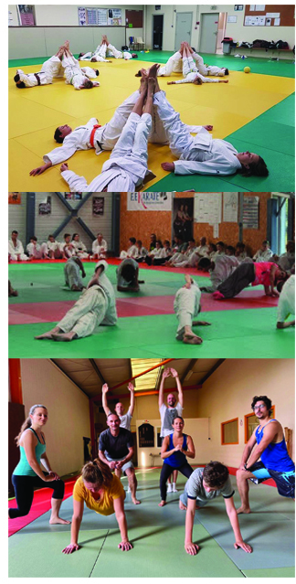

De nos jours, le taïso en tant que discipline associée à un art martial est considéré en France comme un sport.
Souvent pratiqué dans un dojo, vêtu d'un judogi, ou d'un kimono plus léger, parfois simplement en tenue sportive.
La discipline intéresse un public de plus en plus large, sans limite d'âge, qui n'a pas forcément pratiqué de
sport auparavant et qui recherche un loisir axé sur la culture et l'entretien physique. C'est une alternative
ludique aux nombreux sports de remise en forme comme le step ou la gymnastique volontaire puisque certains cours
de Taïso représentent une approche douce des arts martiaux, sans aucun danger (pas de chute, pas de coup
porté).
Les exercices du taïso sont très variés, pouvant se faire seul, ou en binômes :
Entretien cardio-respiratoire
Amélioration de l'endurance
Renforcement musculaire
Amélioration de l'équilibre
Amélioration des capacités psychomotrices
Amélioration de la coordination générale des membres
Assouplissement
Relaxation
Les arts martiaux d'origine japonaise ont toutes une partie de taïso.
